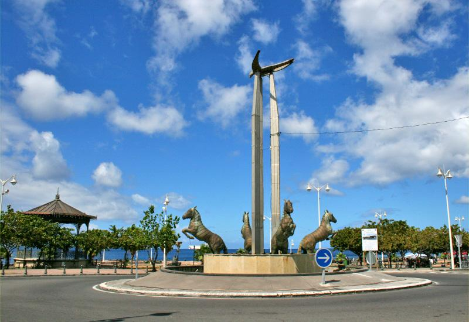
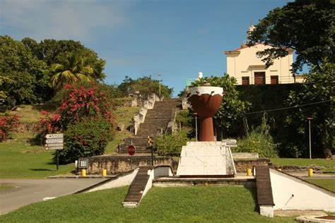
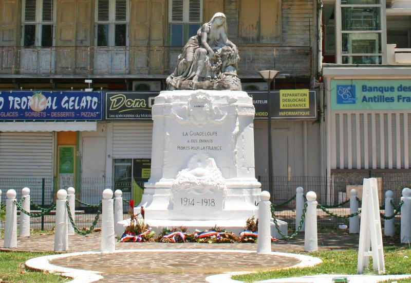

Basse-Terre
La commune de Basse-Terre

Petit-Canal
La commune de Petit-Canal

Pointe-à-Pitre
La commune de Pointe-à-Pitre

La commune de Basse-Terre
La commune de Petit-Canal
La commune de Pointe-à-Pitre